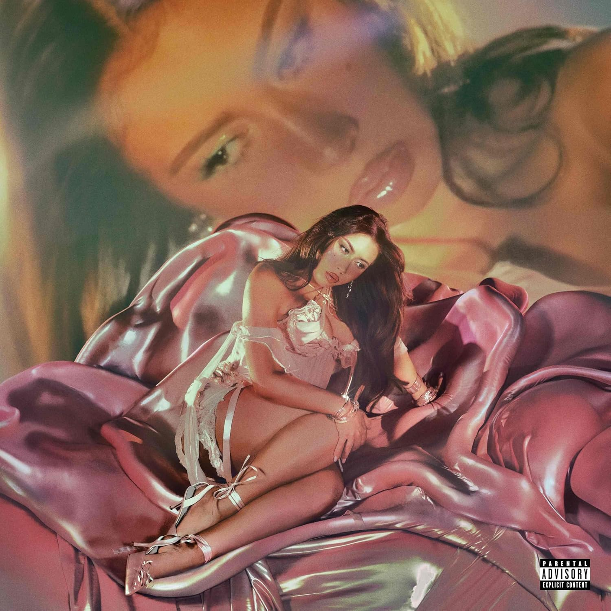

Amor, duelo y libertad: el álbum más íntimo de Kali Uchis
Crítica musical Kali Uchis se aleja del brillo comercial para ofrecernos su obra más íntima: un álbum nacido entre el duelo y la maternidad, donde cada canción respira honestidad. Sincerely no busca complacer, sino acompañar.
UN ÁLBUM NACIDO FUERA DEL ESTUDIO
Compuesto entre viajes y silencios obligados, el disco se gestó lejos de la presión de las discográficas. Uchis apostó por grabar en espacios domésticos, permitiendo que cada pista retuviera la calidez de lo hecho a mano.
“I’m sleepless without you, you’re the calm through the storm.”
La producción se apoya en texturas acústicas y sintetizadores discretos que envuelven la voz sin ocultarla, creando un ambiente de cercanía que contrasta con la grandilocuencia de sus trabajos anteriores.
LETRAS ÍNTIMAS, VOZ CONTENIDA
La cantante se muestra vulnerable y directa, alejándose de metáforas rebuscadas para hablar de miedos y anhelos cotidianos. Su interpretación es susurrada, casi en confesión, como si cada verso se pensara para un solo oyente.
“Esto es lo que hay, no para que lo juzgues, sino para que lo sientas.”
El resultado es una narrativa que invita a la empatía, donde la voz se coloca al servicio del relato y no del virtuosismo. Cada pista se siente como una carta sin remitente.
UNA OBRA PARA ESCUCHAR DESPACIO
Lejos de los sencillos diseñados para las listas, Sincerely propone un recorrido pausado, con canciones que piden ser degustadas sin distracciones. Es un álbum que recompensa la escucha atenta y la repetición.
En tiempos de gratificación inmediata, Uchis entrega un trabajo que respira y deja respirar, un refugio sonoro donde la intimidad se vuelve universal.
üéß Ficha t√©cnica
- Título: Sincerely
- Artista: Kali Uchis (Karly-Marina Loaiza)
- Productores: Josh Crocker, Kali Uchis, Tom Henry, Dylan Wiggins
- Sello: Capitol Records / Left Music
- Disponible en: Spotify, Apple Music, Soundcloud, YouTube
- Fecha de publicación: 9 de mayo de 2025
- Géneros: R&B alternativo, dream pop, soul, psicodelia latina